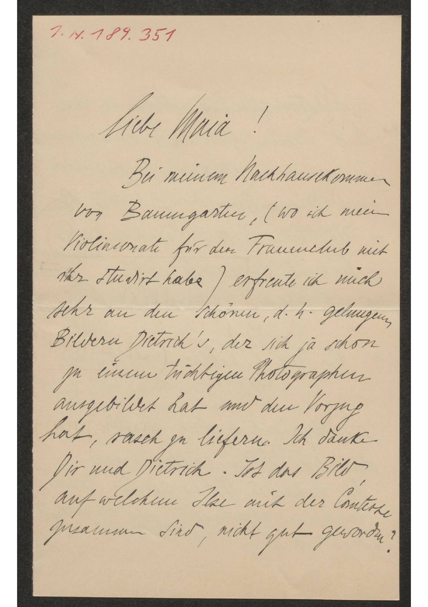
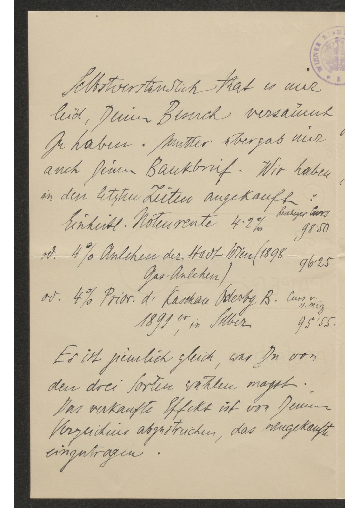
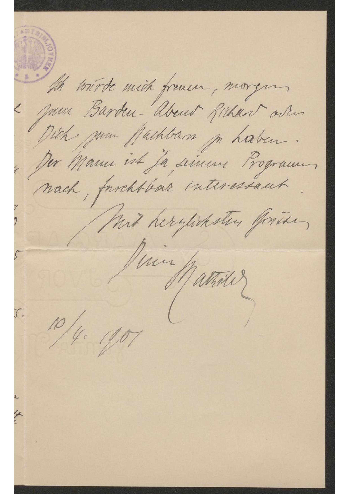
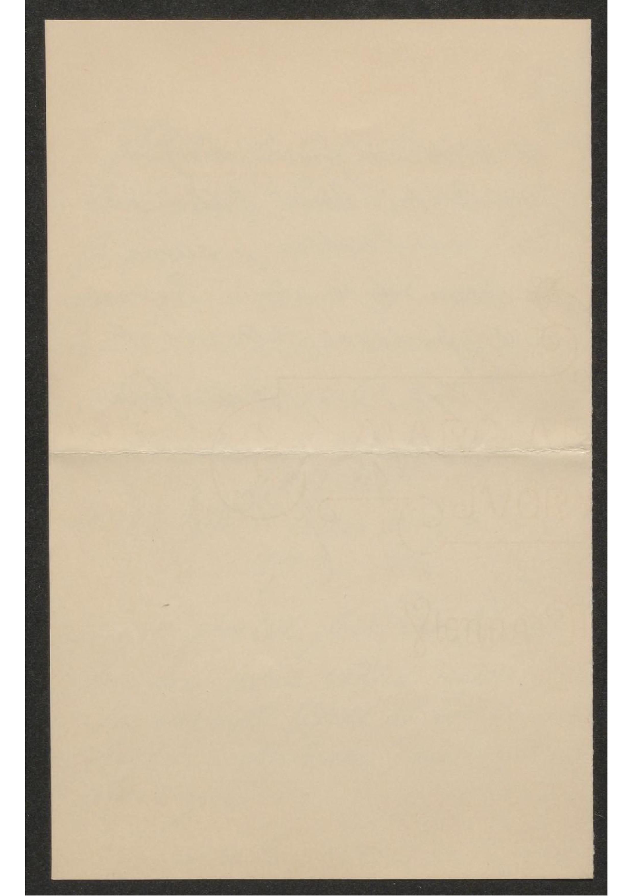

Liebe Maia!
Bei meinem Nachhausekommen
von Baumgarter, (wo ich mein
Violinsonate für den Frauenclub mit
ihr studirt habe) erfreute ich mich
sehr an den schönen, d. h. gelungenen,
Bildern Dietrich's, der sich ja schon
zu einem tüchtigen Photographen
ausgebildet hat und den Vorzug
hat, rasch zu liefern. Ich danke
Dir und Dietrich. Ist das Bild
auf welchem Ilse mit der Comtesse
zusammen sind, nicht gut geworden?
Liebe Maia!
Bei meinem Nachhausekommen
von Baumgarter, (wo ich mein
Violinsonate für den Frauenclub mit
ihr studirt habe) erfreute ich mich
sehr an den schönen, d. h. gelungenen,
Bildern Dietrich's, der sich ja schon
zu einem tüchtigen Photographen
ausgebildet hat und den Vorzug
hat, rasch zu liefern. Ich danke
Dir und Dietrich. Ist das Bild
auf welchem Ilse mit der Comtesse
franz. für Gräfin
zusammen sind, nicht gut geworden?

Selbstverständlich that es mir
leid, Deinen Besuch versäumt
zu haben. Mutter übergab mir
auch Deinen Bankbrief. Wir haben
in den letzten Zeiten angekauft:
Es ist peinlich gleich, was Du von
den drei Sorten wählen magst.
Das verkaufte Effekt ist von Deinem
Verzeichnis abzustreichen, das neugekaufte
eingetragen.
Selbstverständlich that es mir
leid, Deinen Besuch versäumt
zu haben. Mutter übergab mir
auch Deinen Bankbrief. Wir haben
in den letzten Zeiten angekauft:
heutiger Curs |
|
Einheitl. Notenrente 4∙2% |
98∙50 |
od. 4% Anlehen der Haiz Wien (1898 Gas-Anlehen) |
96∙25 |
od. 4% Prior. d. Kaschare (derbg. B. 1891er, in Silber |
Curs v. H. Merz 95∙55. |
Es ist peinlich gleich, was Du von
den drei Sorten wählen magst.
Das verkaufte Effekt ist von Deinem
Verzeichnis abzustreichen, das neugekaufte
eingetragen.

Ich würde mich freuen, morgen
zum Barden-Abend Richard oder
Dich zum Nachbarn zu haben.
Der Mann ist ja seinem Programm
nach, furchtbar interessant.
Mit herzlichsten Grüsse
Deine
Ich würde mich freuen, morgen
zum Barden-Abend Richard oder
Dich zum Nachbarn zu haben.
Der Mann ist ja seinem Programm
nach, furchtbar interessant.
Mit herzlichsten Grüsse
Deine
Mathilde
10/4. 1901
